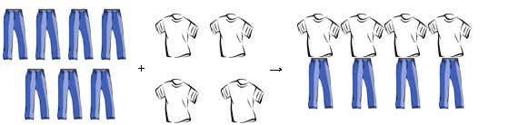
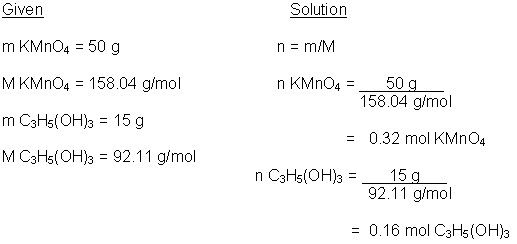
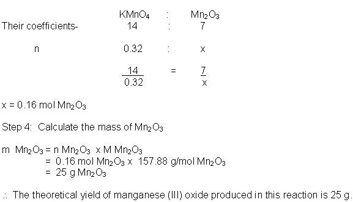
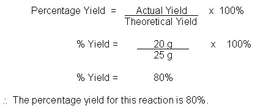

Unit 3: Quantities in Chemical Reactions
Activity 4: Stoichiometry
Content
Limiting Reagent
Suppose there are seven pairs of identical pants and four pairs of identical shirts. How many complete sets of pants and shirts can there be?
There are four pairs of outfits. The identical shirts are the limiting reagent. The identical pants are in excess. There will be three pants too many. The number of complete sets is dictated by the limiting reagent. Here is a pictorial showing the relationships:

Only four outfits will be produced because the t - shirts are the limiting reagent and the pants are in excess. The amount of product(s) is/are dependent on the limiting reagent.
|
|
Watch the video clip Glycerin and Permanganate Torch but please be aware, that, depending on your Internet connection speed, all clips on this page may take a few minutes to download. You can always continue reading the remainder of this page while you wait. |
|---|
In this video clip, potassium permanganate reacts with glycerine to produce potassium carbonate, manganese oxide, carbon dioxide and water. The balanced chemical equation is as follows:
 Example
Example
a) If 50 g of potassium permanganate react with 15 g of glycerine, how much manganese (III) oxide will be produced?
b) Find the percentage yield if 20 g of manganese (III) oxide was produced.
(****ATTENTION**** In this question, the mass of each reactant is given. There will be an extra step in the solution.)
 Sample Solution (with Commentary)
Sample Solution (with Commentary)
a) Step 1: (Calculate the number of moles of each reactant.)

Step 2: (In this step, you will divide each calculated mole value of the reactant by its respective coefficient from the balanced equation to determine which reactant is the excess and which reactant is the limiting reagent. There will be more about the limiting reagent after this solution.)
mol to coefficient ratio of KMnO4 = 0.32/14 = 0.023
mol to coefficient ratio of C3H5(OH)3 = 0.16/4 = 0.041
The lowest ratio value belongs to KMnO4 and therefore, it is the limiting reagent.
(****ATTENTION**** You will no longer need these calculated values.
Step 3: Use the number of moles of the limiting reagent calculated in Step 1 to calculate the moles of the product asked for in the question and their respective coefficients from the balanced equation.)
Let x represent the theoretical amount of manganese (III) oxide being produced.

b) (The calculated mass of manganese (III) oxide is the theoretical yield. If it was a perfect world and all the molecules and atoms bumped together and arranged themselves in the proper way, then exactly 25 g of manganese (III) oxide would be produced. If the percentage yield is not asked for in a stoichiometry question, then it is assumed that there is 100% yield. However, the percentage yield of a reaction can be calculated by the following formula):

 Question
Question
Aspirin is made by reacting acetic anhydride with salicylic acid in an aqueous medium. Find the percentage yield of aspirin if 112 g of aspirin are produced when 100 g of salicylic acid mixes with 200 g of acetic anhydride. The balanced chemical equation is as follows:
2C7H6O3(aq) + C4H6O3(aq)  2C9H8O4(aq) + H2O(l)
2C9H8O4(aq) + H2O(l)
salicylic acid acetic anhydride aspirin water
 Answer
Answer
 Resources
Resources
- Mass Relations in Balanced Equations
- Limiting Reactant and Theoretical Yield
- Chemical Equations Practice Quiz
This is a disclaimer. External Resources will open in a new window. Not responsible for external content.
Unless otherwise indicated, all images in this Activity are from the public domain or are © clipart.com or Microsoft clipart and are used with permission.